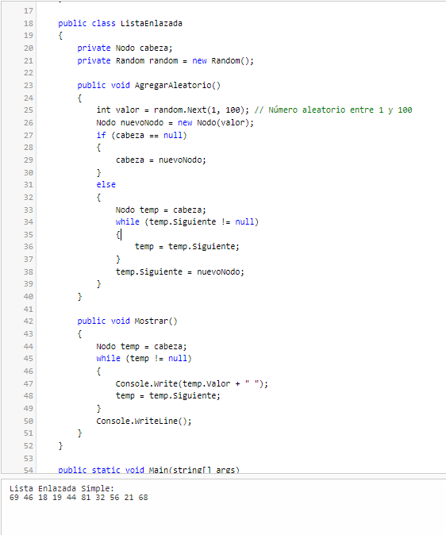

Una lista enlazada simple es una estructura de datos donde cada nodo contiene un valor y una referencia al siguiente nodo. Permite inserciones y eliminaciones eficientes, pero solo se puede recorrer en una dirección. Es útil para colecciones dinámicas de elementos.
Lista enlazada
